10 Inference
Ready for review.
People generally see what they look for, and hear what they listen for.
— Harper Lee, To Kill a Mockingbird
In this chapter, we consider approaches to deriving knowledge from information which can be generalized to the population from which the data is sampled. This process is known as statistical inference. The discussion here implements descriptive assessments, statistical tests, and evaluation procedures for a series of contexts which are common in the analysis of corpus-based data. During our treatment of these contexts, we will establish a foundational understanding of the null hypothesis signficance testing (NHST) framework using a simulation-based approach. This approach is more intuitive, easier to implement, and provides a better conceptual understanding of the statistical designs and analyses. The structure of the chapter groups significance testing scenarios by reponse and explanatory variables, highlighting the commonalities and differences that arise in the statistical designs and analyses.
10.1 Orientation
The aim of this section is to provide an overview of inferential data analysis (IDA). First we consider the research goal of inferential analysis pointing to key differences with exploratory data analysis (EDA) and predictive data analysis (PDA). Next we outline the Null Hypothesis Signficance Testing (NHST) approach to IDA, highlighting the key steps in the workflow used to conduct analysis.
10.1.1 Research goal
In contrast to exploratory and predictive analyses, inference is not a data-driven endeavor. Rather, the goal of inferential data analysis (IDA) is to make claims about the population and assess the extent to which the data supports those claims. This implicates two key methodological restrictions which are not in play in other analysis methods.
First, the research question and expected findings are formulated before the data is analyzed, in fact strictly speaking this should take place even before data collection. This helps ensure that the data is aligned with the research question and that the data is representative of the population and that the analysis has a targeted focus and does not run the risk of becoming a ‘just-so’ story1 or a ‘significance-finding’ mission2 both of which violate the principles of significance testing.
Second, the data used in IDA is only used once. That is to say, that the entire dataset is used a single time to statistically interrogate the relationship(s) of interest. In both EDA and PDA the data can be approached in different ways and the results of the analysis can be used to inform the next steps in the analysis. In IDA, however, the data is used to test a specific hypothesis and the results of the analysis are interpreted in the context of that hypothesis.
10.1.2 Approach
The methodological approach to inferential data analysis (IDA) is the most straightforward of the analysis types covered in this textbook. As the research goal is to test a claim, the steps necessary are fewer than in EDA or PDA, where the exploratory nature of these approaches includes various possible iterations. The workflow for IDA is shown in Table 10.1.
| Step | Name | Description |
|---|---|---|
| 1 | Identify | Identify and map the hypothesis statement to the appropriate response and explanatory variables |
| 2 | Inspect | Assess the distribution of the variable(s) with the appropriate descriptive statistics and visualizations. |
| 3 | Interrogate | Apply the appropriate statistical procedure to the dataset. |
| 4 | Interpret | Review the statistical results and interpret them in the context of the hypothesis. |
Based on the hypothesis statement, we first identify and operationalize the variables. The response variable whose variation we aim to explain. In most statistical designs, one or more explanatory variables are included in the analysis in an attempt to gauge the extent to which these variables account for the variation in the response variable. For both reponse and explanatory variables, it is key to confirm that your operationalization of the variables is well-defined and that the data is aligned with the operationalization.
Next, we determine the informational values of the variables. The informational value of each variable will condition how we approach visualization, interrogation, and ultimately interpretation of the results. Note, that some informational types can be converted to other types, specifically higer-order types can be converted to lower-order types. For example, a continuous variable can be converted to a categorical variable, but not vice versa. It is preferrable, however, to use the highest informational value of a variable. Simplifying data results in a loss of information –which will result in a loss of information and hence statistical power which may lead to results that obscure meaningful patterns in the data (Baayen 2004).
With our design in place, we can now inspect the data. This involves assessing the distribution of the variables using descriptive statistics and visualizations. The goal of this step is to confirm the integrity of the data (missing data, anomalies, etc.), identify general patterns in the data, and identify potential outliers. As much as this is a verification step, it also serves to provide a sense of the data and the extent to which the data aligns with the hypothesis. This is particularly true when statistical designs are complex and involve multiple explanatory variables. An appropriate visualization provides context for interpreting the results of the statistical analysis.
Interrogating the data involves applying the appropriate statistical procedure to the dataset. In the Null Hypothesis Significance Testing (NHST) paradigm, this process includes calculating a statistic from the data, comparing it to a null hypothesis distribution, and measuring the evidence against the null hypothesis. The null hypothesis distribution is a distribution of statistic values that we would expect if the null hypothesis were true, i.e. that there is no difference or relationship between the explanatory and/ or response variables. By comparing the observed statistic to the null hypothesis distribution, we can determine the likelihood of observing the observed statistic if the null hypothesis were true. This likelihood is known as the p-value. When the p-value is below a pre-determined threshold, typically 0.05, the result is considered statistically significant. This means that the observed statistic is sufficiently different from the null hypothesis distribution that we can reject the null hypothesis.
Now let’s consider how to approach interpreting the results from a statistical test. The p-value provides a probability that the results of our statistical test could be explained by the null hypothesis. When this probability crosses above the threshold of .05, the result is considered statistically significant, otherwise we have a ‘null result’ (i.e. non-significant).
However, this sets up a binary distinction that can be problematic. On the one hand, what is one to do if a test returns a p-value of .051 or something ‘marginally significant’? According to standard practice these results would not be statistically significant. On the other hand, if we get a statistically significant result, do we move on –case closed? To address both of these issues, it is important to calculate a confidence interval for the test statistic. The confidence interval is the range of values for our test statistic that we would expect the true statistic value to fall within some level of uncertainty. Again, 95% is the most common level of uncertainty. The upper and lower bounds of this range are called the confidence limits for the test statistic.
Used in conjunction with p-values, confidence intervals can provide a more nuanced interpretation of the results of a statistical test. For example, if we get a p-value of .051, but the confidence interval is very narrow, we can be more confident that the results are reliable. Conversely, if we get a p-value of .049, but the confidence interval is very wide, we can be less confident that the results are reliable. If our confidence interval contains the null value, then even a significant p-value will require a more nuanced interpretation.
It is important to underscore that the purpose of IDA is to draw conclusions from a dataset which are generalizable to the population. These conclusions require that there are rigorous measures to ensure that the results of the analysis do not overgeneralize (suggest there is a relationship when there is not one) and balance that with the fact that we don’t want to undergeneralize (miss the fact that there is an relationship in the population, but our analysis was not capable of detecting it).
10.2 Analysis
In this section, we will discuss the practical application of inferential data analysis. The discussion will be divided into two sections based on the type of response variable: categorical and numeric. We will then explore specific designs for univariate, bivariate, and multivariate tests. Throughout this process, we will focus on null hypothesis testing, covering concepts and methods that are relevant to significance testing and the interpretation of results.
Two datasets are included in this section to provide a context for the inferential data analysis in both categorical and numeric cases. The dative dataset is a subset of the languageR::dative dataset (R-languageR?). It contains over 3k observations describing the realization of the recipient clause in English dative constructions. The fillers dataset is drawn from the Switchboard Dialog Act Corpus (University of Colorado Boulder 2008). This dataset contains … observations summarizing the use of fillers by speaker in the corpus.
We will learn and implement null significance testing using a simulation-based method. In contrast to theory-based methods, simulation-based methods tend to be more intuitive, easier to implement, and provide a better conceptual understanding of the statistical designs and analyses. The steps for implementing a simulation-based approach to significance testing are outlined in Table 10.2.
| Step | Name | Description |
|---|---|---|
| 1 | Specify | Specify the variables of interest and their relationship |
| 2 | Calculate | Calculate the observed statistic |
| 3 | Hypothesize | Generate the null hypothesis distribution |
| 4 | Visualize | Visualize the null hypothesis distribution |
| 5 | Get p-value | Calculate the p-value |
| 6 | Get confidence interval | Calculate the confidence interval |
The infer package (Bray et al. 2023) provides a tidyverse-friendly framework to implement simulation-based methods for statistical inference. Designed to be used in conjunction with the tidyverse (Wickham 2023), infer provides a set of functions that can be used to specify the variables of interest, calculate the observed statistic, generate the null hypothesis distribution, visualize the null hypothesis distribution, calculate the p-value, and calculate the confidence interval.
Let’s load the necessary packages and import the datasets we will use in this section, as seen in Example 10.1.
Example 10.1
10.2.1 Categorical
Here we demonstrate the application of inferential data analysis (IDA) to categorical response variables. This will include various common statistical designs and analyses. In Table 10.3, we see common design scenarios, the variables involved, and the statistic used in the analysis.
| Scenario | Dependent variable | Independent variable(s) | Statistical test |
|---|---|---|---|
| Univariate | Categorical | None | Proportion |
| Bivariate | Categorical | Categorical | Difference in proportions |
| Bivariate | Categorical (>2 levels) | Categorical (>2 levels) | Chi-square |
| Multivariate | Categorical | Categorical or Numeric (>1 variables) | Logistic regression |
We will use the dative_df dataset to illustrate each of these designs and analyses. To familiarize ourselves with the dataset, let’s consider the data dictionary in Table 10.4.
| variable | name | variable_type | description |
|---|---|---|---|
| realization_of_rcp | Realization of RCP | categorical | The realization of the recipient (NP/ PP) |
| modality | Modality | categorical | The modality of the utterance (spoken/ written) |
| length_of_rcp | Length of RCP | numeric | The length of the recipient (number of words) |
| length_of_thm | Length of THM | numeric | The length of the theme (number of words) |
We see that this dataset has four variables, two categorical and two numeric. In our demonstrations we are going to use the realization_of_rcp as the response variable, the variable whose variation we are investigating.
For a bit more context, a dative is the phrase which reflects the entity that takes the recipient role in a ditransitive clause. In English, the recipient (dative) can be realized as either a prepositional phrase (PP) as seen in (1) or as a noun phrase (NP) as seen in (2) below.
Example utterances:
- John gave the book [to Mary PP].
- John gave [Mary NP] the book.
Together these two syntactic options are known as the Dative Alternation Bresnan et al. (2007).
From the large set of variables in the original dataset, I’ve selected three explanatory variables to use in our demonstrations. These variables are:
-
modality: either written or spoken -
length_of_rcp: the length of the recipient clause (in words) -
length_of_thm: the length of the theme clause (in words)
In preparation for statistical analysis, we need to convert the character variables to factors. Let’s do that and preview the dataset, as seen in Example 10.2.
Example 10.2
# Convert character variables to factors
dative_df <-
dative_df |>
mutate(across(where(is.character), factor))
# Preview
glimpse(dative_df)> Rows: 3,263
> Columns: 4
> $ realization_of_rcp <fct> NP, NP, NP, NP, NP, NP, NP, NP, NP, NP, NP, NP, NP,…
> $ modality <fct> written, written, written, written, written, writte…
> $ length_of_rcp <dbl> 1, 2, 1, 1, 2, 2, 2, 1, 1, 1, 2, 2, 1, 2, 1, 1, 4, …
> $ length_of_thm <dbl> 14, 3, 13, 5, 3, 4, 4, 1, 11, 2, 3, 3, 5, 2, 8, 2, …We can see that the dataset includes 3263 observations. We will take a closer look a the descriptive statistics for the variables as we prepare for each analysis.
Univariate analysis
The univariate analysis is the simplest statistical design and analysis. It includes only one variable. The goal is to describe the distribution of the levels of the variable. The realization_of_rcp variable has two levels: NP and PP. A potential research question is:
- Is there a difference in the proportion of NP and PP realizations of the recipient clause?
This question can be answered using a difference in proportion test. The null hypothesis is that there is no difference in the proportion of NP and PP realizations of the recipient clause. The alternative hypothesis is that there is a difference in the proportion of NP and PP realizations of the recipient clause.
Before we get into statistical analysis, it is always a good idea to cross-tabulate or visualize the question, depending on the complexity of the relationship. In Example 10.3, we see the code the shows the distribution of the levels of the realization_of_rcp variable in a cross-table.
Example 10.3
# Cross-tabulation of `realization_of_rcp`
dative_df |>
tabyl(realization_of_rcp) |>
adorn_pct_formatting(digits = 2) |>
kable() |>
kable_styling()| realization_of_rcp | n | percent |
|---|---|---|
| NP | 2414 | 73.98% |
| PP | 849 | 26.02% |
From Table 10.5, we see that the proportion of NP realizations of the recipient clause is higher than the proportion of PP realizations of the recipient clause. However, we cannot conclude that there is a difference in the proportion of NP and PP realizations of the recipient clause. We need to conduct a statistical test to determine if the difference is statistically significant.
To determine if the distribution of the levels of the realization_of_rcp variable is different from what we would expect if the null hypothesis were true, we need to calculate the difference observed in the sample and compare it to the differences observed in many samples where the null hypothesis is true.
First, let’s calculate the proportion of NP and PP realizations of the recipient clause in the sample. We turn to the specify() function from the infer package to specify the variable of interest. In this case, we only have the response variable. Furthermore, the argument success specifies the level of the response variable that we will use as the ‘success’. The term ‘success’ is used because the specify() function was designed for binomial variables where the levels are ‘success’ and ‘failure’, as seen in Example 10.4.
Example 10.4
# Specify the variable of interest
dative_spec <-
dative_df |>
specify(
response = realization_of_rcp,
success = "NP"
)
dative_spec> Response: realization_of_rcp (factor)
> # A tibble: 3,263 × 1
> realization_of_rcp
> <fct>
> 1 NP
> 2 NP
> 3 NP
> 4 NP
> 5 NP
> 6 NP
> 7 NP
> 8 NP
> 9 NP
> 10 NP
> # ℹ 3,253 more rowsThe dative_spec is a data frame with attributes which are used by the infer package to maintain information about the statistical design for the analysis. In this case, we only have information about what the response variable is.
The next step to calculating the observed proportion is to calculate the proportion statistic. The calculate() function from the infer package is used to calculate the proportion statistic. The calculate() function takes the dative_spec data frame as an argument. The calculate() function returns a data frame with the proportion statistic in the stat column, as seen in Example 10.5.
Example 10.5
# Calculate the proportion statistic
dative_obs <-
dative_spec |>
calculate(stat = "prop")
dative_obs> Response: realization_of_rcp (factor)
> # A tibble: 1 × 1
> stat
> <dbl>
> 1 0.740Note, that the observed statistic, proportion, is the same as the proportion we calculated in Table 10.5. In such a simple example, the summary statistic and the observed statistic are the same. But this simple example shows how choosing the ‘success’ level of the response variable is important. If we had chosen the ‘PP’ level as the ‘success’ level, then the observed statistic would be the proportion of PP realizations of the recipient clause. There is nothing wrong with choosing the ‘PP’ level as the ‘success’ level, but it would change the direction of the observed statistic.
Now that we have the observed statistic, our goal will be to determine if the observed statistic is different from what we would expect if the null hypothesis were true. To do this, we simulate many samples where the null hypothesis is true. Simulation means that we will randomly sample from the dative_df data frame many times. Note that sampling the dataset in this way is much more feasible with a computer than it would be to do so by hand. This is one of the advantages of using a computer for statistical analysis.
The only addition decision we need to make is how the sampling takes place. Since realization_of_rcp is a variable with only two levels, the null hypothesis that both levels are equally likely. In other words, in a null hypothesis world, NP and PP we would expect the proportions to roughly be 50/50.
To formulize this hypothesis with infer we use the hypothesize() function and set the null hypothesis to “point” and the proportion to 0.5. Then we can generate() a number of samples, say 1,000, drawn from our 50/50 world. Finally, the “prop” (proportion) statistic is calculate()d for each of the 1,000 samples and returned in a data frame, as seen in Example 10.7.
Example 10.6
# Generate the null hypothesis distribution
dative_null <-
dative_spec |>
hypothesize(null = "point", p = 0.5) |>
generate(reps = 1000, type = "draw") |>
calculate(stat = "prop")
dative_null> Response: realization_of_rcp (factor)
> Null Hypothesis: point
> # A tibble: 1,000 × 2
> replicate stat
> <int> <dbl>
> 1 1 0.490
> 2 2 0.486
> 3 3 0.506
> 4 4 0.492
> 5 5 0.496
> 6 6 0.489
> 7 7 0.510
> 8 8 0.513
> 9 9 0.494
> 10 10 0.498
> # ℹ 990 more rowsThe result of Example 10.7 is a data frame with as many rows as there are samples. Each row contains the proportion statistic for each sample drawn from the hypothesized distribution that the proportion of NP realizations of the recipient clause is 0.5.
To appreciate the null hypothesis distribution, we can visualize it using a histogram. The infer package provides a convenient visualize() function for visualizing distributions, as seen in Example 10.7.
Example 10.7
# Visualize the null hypothesis distribution
dative_null |>
visualize()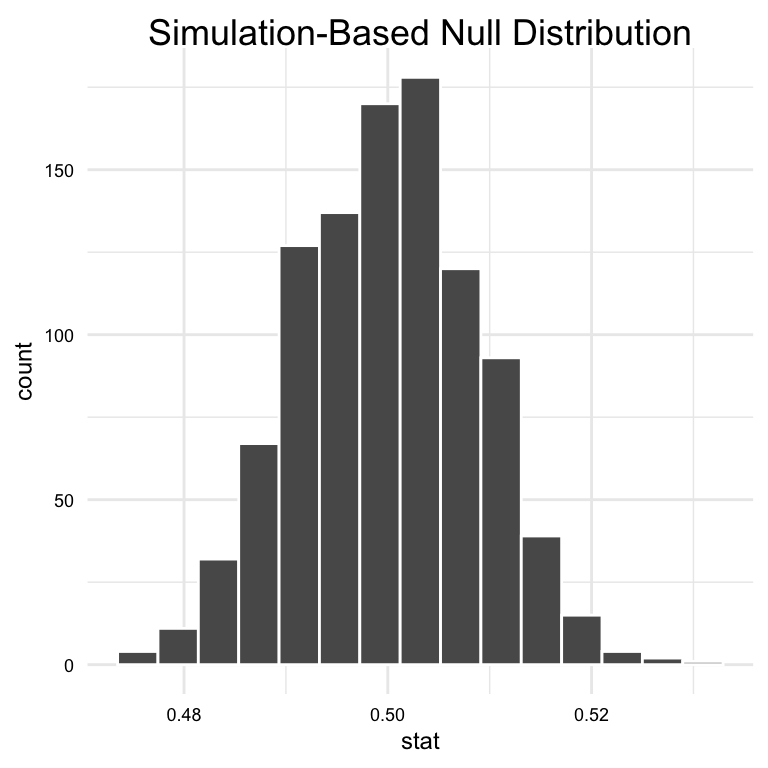
On the x-axis is the proportion statistic of NP realizations of the recipient clause that we would expect if the null hypothesis were true. For the 1,000 samples, the proportion statistic ranges from 0.48, 0.53. Importantly we can appreciate that the most of the proportion statistics are around 0.5, which is what we would expect if the null hypothesis were true. But there is variation, as we would also expect.
Why would we expect variation? Consider the following analogy. If we were to flip a fair coin 10 times, we would expect to get 5 heads and 5 tails. But this doesn’t always happen. Sometimes we get 6 heads and 4 tails. Sometimes we get 7 heads and 3 tails, and so on. As the number of flips increases, however, we would expect the proportion of heads to be closer to 0.5, but there would still be variation. The same is true for the null hypothesis distribution. As the number of samples increases, we would expect the proportion of NP realizations of the recipient clause to be closer to 0.5, but there would still be variation. The question is whether the observed statistic we obtained from our data, in Example 10.5, is within some level of variation that we would expect if the null hypothesis were true.
Let’s visualize the observed statistic on the null hypothesis distribution, as seen in Figure 10.2, to gauge whether the observed statistic is within some level of variation that we would expect if the null hypothesis were true.
Example 10.8
# Visualize the null hypothesis distribution with the observed statistic
dative_null |>
visualize() + # note we are adding a visual layer `+`
geom_vline(
data = dative_obs, # the data is the observed statistic
aes(xintercept = stat), # the x-axis is the proportion statistic
color = "red", # the color of the line is red
linewidth = 2 # the size of the line is 2
)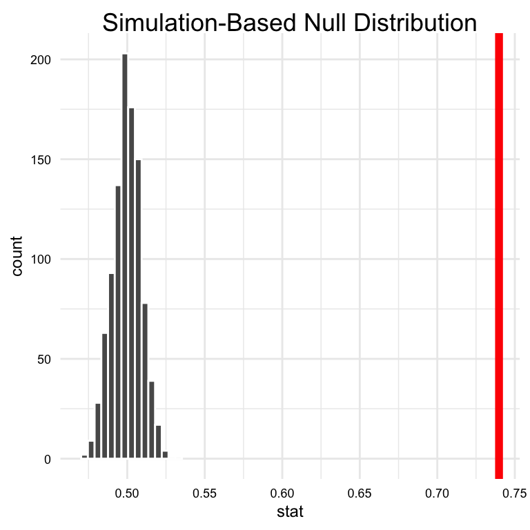
Just from a visual inspection, we can see that the observed statistic lies far away from the null distribution, far right of the right tail. This suggests that the observed statistic is not within some level of variation that we would expect if the null hypothesis were true.
But we need to quantify this. We need to calculate the probability of observing the observed statistic or a more extreme statistic if the null hypothesis were true. This is called the p-value. The p-value is calculated by counting the number of samples in the null hypothesis distribution that are more extreme than expected within some level of uncertainty. 95% is the most common level of uncertainty, which is called the alpha level. The remain 5% of the distribution is the space where the likelihood that the null hypothesis accounts for the statistic is below This means that if the p-value is less than 0.05, then we reject the null hypothesis. If the p-value is greater than 0.05, then we fail to reject the null hypothesis.
The shade_p_value() function from the infer package will plot our observed statistic and shade the sample statistics that fall within the alpha level, as seen in Example 10.9.
Example 10.9
# Visualize the null hypothesis distribution with the observed statistic and p-value
dative_null |>
visualize() +
shade_p_value(
dative_obs, # the observed statistic
direction = "two-sided", # the direction of the alternative hypothesis
)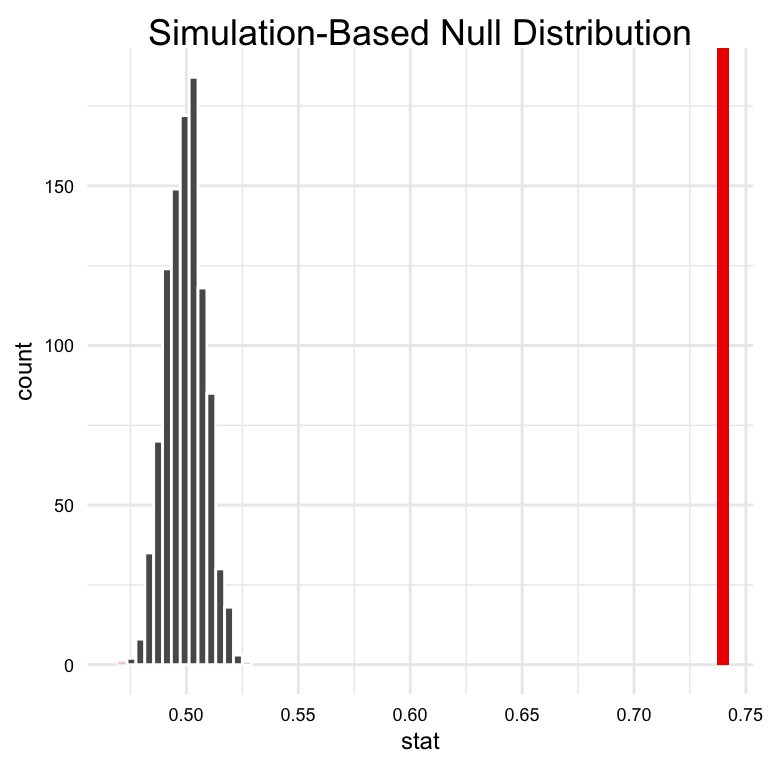
The two plots we’ve generated look identical, we cannot appreciate the shading of the p-value range, as our statistic is so far away from the null hypothesis distribution. But if we were to change the observed statistic, to say \(0.51\), we would see the shading, as seen in Example 10.10.
Example 10.10
# Visualize the null hypothesis distribution with the observed statistic and p-value
dative_null |>
visualize() +
shade_p_value(
obs_stat = 0.51, # the observed statistic
direction = "two-sided", # the direction of the alternative hypothesis
)
Now we can appreciate the shading of the p-value range. We can now talk about the “two-sided” direction we used. The direction of the alternative hypothesis is important because it determines the p-value range. The “two-sided” direction means that we are interested in the proportion of NP realizations of the recipient clause being different from 0.5. If we were only interested in the proportion of NP realizations of the recipient clause being greater than 0.5, then we would use the “greater” direction. If we were only interested in the proportion of NP realizations of the recipient clause being less than 0.5, then we would use the “less” direction.
Let’s visualize our hypothetical observed statistic of 0.51 on the null hypothesis distribution were the alternative hypothesis is that the proportion of NP realizations of the recipient clause is greater than 0.5, as seen in Example 10.11.
Example 10.11
# Visualize the null hypothesis distribution with the observed statistic and p-value
dative_null |>
visualize() +
shade_p_value(
0.51, # the observed statistic
direction = "greater", # the direction of the alternative hypothesis
)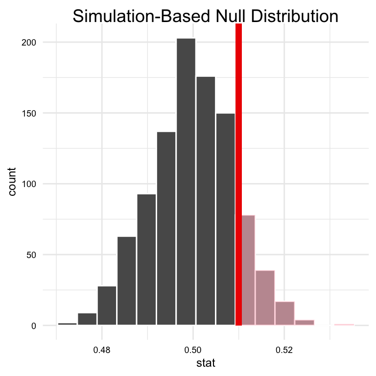
As you can now see, the p-value range is dependent on the null hypothesis distribution and the direction of the alternative hypothesis as well as the number of samples. The more samples we have, the more precise the p-value range will likely be.
With infer we can calculate the p-value using the get_p_value() function. Let’s calculate the p-value for our observed statistic and the hypothetical observed statistic of 0.51, as seen in Example 10.12.
Example 10.12
# Calculate the p-value (observed statistic)
dative_null |>
get_p_value(
dative_obs, # the observed statistic
direction = "two-sided" # the direction of the alternative hypothesis
)> # A tibble: 1 × 1
> p_value
> <dbl>
> 1 0# Calculate the p-value (hypothetical observed statistic)
dative_null |>
get_p_value(
0.51, # the observed statistic
direction = "two-sided" # the direction of the alternative hypothesis
)> # A tibble: 1 × 1
> p_value
> <dbl>
> 1 0.258The p-value for our observed statistic is reported as \(0\), with a warning that the p-value estimate is contingent on the number of samples we generate in the null distribution. 1,000 is a reasonable number of samples, so we likely have a statistically significant result at the alpha level of 0.05.
The p-value for our hypothetical observed statistic of 0.51 is reported as larger than \(0.05\), which provides evidence that our hypothetical observed statistic is not sufficiently different from the variation expected in the null distribution to reject the null hypothesis, i.e. we would not have a significant result at the alpha level of 0.05.
The p-value is one, traditionally very common, estimate of uncertainty. Another estimate of uncertainty is the confidence interval. The confidence interval is the range of values for our test statistic that we would expect the true statistic value to fall within some level of uncertainty. Again, 95% is the most common level of uncertainty. The upper and lower bounds of this range are called the confidence limits for the test statistic. The confidence interval is calculated by calculating the confidence limits for the test statistic for many samples from the observed data. But instead of generating a null hypothesis distribution, we generate a distribution based on resampling from the observed data. This is called the bootstrap distribution. The bootstrap distribution is generated by resampling from the observed data, with replacement, many times. This simulates the process of sampling from the population many times. Each time the test statistic is generated for each sample. The confidence limits are the 2.5th and 97.5th percentiles of the bootstrap distribution. The confidence interval is the range between the confidence limits.
In Example 10.13, we see the code for calculating the confidence interval for our observed statistic.
Example 10.13
# Generate boostrap distribution
dative_boot <-
dative_spec |>
generate(reps = 1000, type = "bootstrap") |>
calculate(stat = "prop")
dative_ci <-
dative_boot |>
get_confidence_interval(level = 0.95) # 95% confidence interval
dative_ci > # A tibble: 1 × 2
> lower_ci upper_ci
> <dbl> <dbl>
> 1 0.726 0.755Let’s visualize the confidence interval for our bootstrapped samples, as seen in Example 10.14.
Example 10.14
# Visualize the bootstrap distribution with the confidence interval
dative_boot |>
visualize() +
shade_confidence_interval(
dative_ci # the confidence interval
)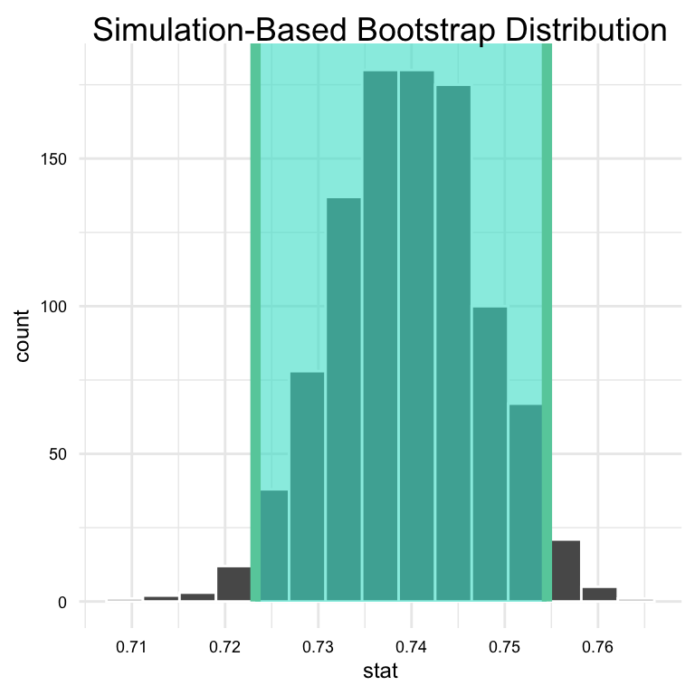
The confidence level is the probability that the confidence interval contains the true value. The confidence level is typically set to 0.95 in the social sciences. This means that if the confidence interval contains the null hypothesis value, then we fail to reject the null hypothesis. If the confidence interval does not contain the null hypothesis value, then we reject the null hypothesis.
Our stat is 0.74 and the confidence interval is 0.726 to 0.755. The confidence interval does not contain the null hypothesis value of 0.5, which provides evidence that the proportion of NP realizations of the recipient clause is different from 0.5.
Confidence intervals are often misinterpreted. Confidence intervals are not the probability that the true value is within the range. The true value is either within the range or not. The confidence interval is the probability that the range contains the true value. This is a subtle but important distinction.
Interpreted correctly confidence intervals can enhance our understanding of the uncertainty of our test statistic and reduces the interpretation of p-values (which are based on a relatively arbitrary alpha level) as a binary decision, significant or not significant. Instead, confidence intervals encourage us to think about the uncertainty of our test statistic as a range of values that we would expect the true value to fall within some level of uncertainty.
-
Add note on effect size for proportion statistic?
- Effect size measures for proportion is the difference in proportions?
Bivariate analysis
The univarite case is not very interesting or common in statistical inference, but it is a good place to start to understand the process and the logic of statistical inference. The bivariate case, on the other hand, is much more common and interesting. The bivariate case includes two variables. The goal is to describe the relationship between the two variables.
In the dative_df dataset, we can imagine asking the question:
- Is there a difference in the proportion of NP and PP realizations of the recipient clause by modality?
This question can be answered using a difference in proportions test, as both variables are binomial (have two levels). The null hypothesis is that there is no difference in the proportion of NP and PP realizations of the recipient clause by modality. The alternative hypothesis is that there is a difference in the proportion of NP and PP realizations of the recipient clause by modality.
We can cross-tabulate or visualize, but let’s visualize this relationship in this case. In Example 10.15, we see the code the shows the distribution of the levels of the realization_of_rcp variable by the levels of the modality variable.
Example 10.15
# Visualize the relationship between `realization_of_rcp` and `modality`
dative_df |>
ggplot(aes(x = realization_of_rcp, fill = modality)) +
geom_bar(position = "fill") +
labs(
x = "Realization of recipient clause",
y = "Proportion",
fill = "Modality"
)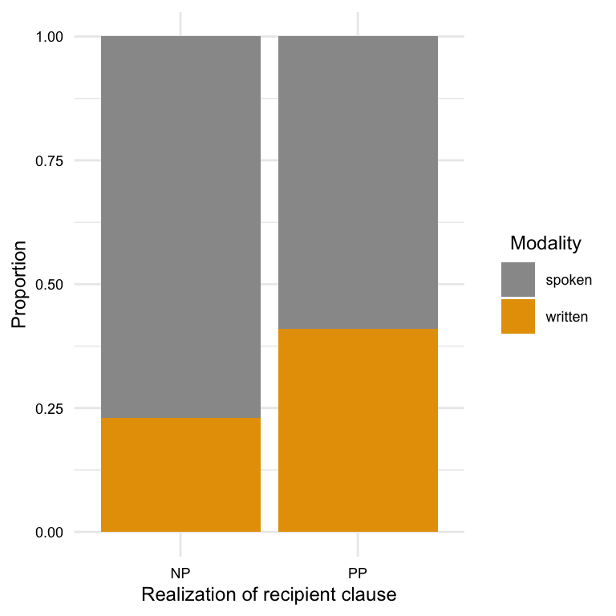
realization_of_rcp variable by the levels of the modality variable.From our visualization, we can see that the proportion of NP realizations of the recipient clause is higher in both modalities, as we might expect from our univariate analysis. However, the proportion appears to be different with the spoken modality having a higher proportion of NP realizations of the recipient clause than the written modality. But we cannot conclude that there is a difference in the proportion of NP and PP realizations of the recipient clause by modality. We need to conduct a statistical test to determine if the difference is statistically significant.
Example 10.16
dative_df |>
tabyl(realization_of_rcp, modality) |> # cross-tabulate
adorn_totals(c("row", "col")) |> # provide row and column totals
adorn_percentages("col") |> # add percentages to the columns
adorn_pct_formatting(rounding = "half up", digits = 0) |> # round the digits
adorn_ns() |> # add observation number
adorn_title("combined") |> # add a header title
kable(booktabs = TRUE) |> # pretty table)
kable_styling()| realization_of_rcp/modality | spoken | written | Total |
|---|---|---|---|
| NP | 79% (1,859) | 61% (555) | 74% (2,414) |
| PP | 21% (501) | 39% (348) | 26% (849) |
| Total | 100% (2,360) | 100% (903) | 100% (3,263) |
To determine if the distribution of the levels of the realization_of_rcp variable by the levels of the modality variable is different from what we would expect if the null hypothesis were true, we need to calculate the difference observed in the sample and compare it to the differences observed in many samples where the null hypothesis is true.
The infer package provides a pipeline which maintains a consistent workflow for statistical inference. As such, the procedure is very similar to the univarite analysis we performed, with some adjustments. Let’s focus on the adjustments. First, our specify() call needs to include the relationship between two variables: realization_of_rcp and modality. The response argument is the response variable, which is realization_of_rcp. The explanatory argument is the explanatory variable, which is modality.
There are two approaches to specifying the relationship between the response and explanatory variables. The first approach is to specify the response variable and the explanatory variable separately as values of the arguments response and explanatory. The second approach is to specify the response variable and the explanatory variable as a formula using the ~ operator. The formula approach is more flexible and allows for more complex relationships between the response and explanatory variables. In Example 10.17, we see the code for the specify() call using the formula approach.
Example 10.17
# Specify the relationship between the response and explanatory variables
dative_spec <-
dative_df |>
specify(
realization_of_rcp ~ modality,
success = "NP"
)
dative_spec> Response: realization_of_rcp (factor)
> Explanatory: modality (factor)
> # A tibble: 3,263 × 2
> realization_of_rcp modality
> <fct> <fct>
> 1 NP written
> 2 NP written
> 3 NP written
> 4 NP written
> 5 NP written
> 6 NP written
> 7 NP written
> 8 NP written
> 9 NP written
> 10 NP written
> # ℹ 3,253 more rowsThe dative_spec now contains attributes about the response and explanatory variables encoded into the data frame.
We now calculate the observed statistic with calculate(), as seen in Example 10.18.
Example 10.18
Two differences are that our statistic is now a difference in proportions and that we are asked to specify the ordere of the levels of modality. The statistic is clear, we are investigating whether the proportion of NP realizations of the recipient clause is different between the spoken and written modalities. The order of the levels of modality is important because it determines the direction of the alternative hypothesis, specifically how the statistic is calculated (the order of the subtraction).
So our observed statistic 0.17 is the proportion of NP realizations of the recipient clause in the spoken modality minus the proportion of NP realizations of the recipient clause in the written modality, so the NP realization appears 17% more in the spoken modality compared to the written modality.
The question remains, is this difference statistically significant? To answer this question, we generate the null hypothesis distribution, visualize the p-value range, and calculate the p-value, as seen in Example 10.19.
Example 10.19
# Generate the null hypothesis distribution
dative_null <-
dative_spec |>
hypothesize(null = "independence") |>
generate(reps = 1000, type = "permute") |>
calculate(stat = "diff in props", order = c("spoken", "written"))
# Visualize the null hypothesis distribution with the observed statistic and p-value
dative_null |>
visualize() +
shade_p_value(
dative_obs, # the observed statistic
direction = "two-sided", # the direction of the alternative hypothesis
)
# Calculate the p-value
dative_null |>
get_p_value(
dative_obs, # the observed statistic
direction = "two-sided" # the direction of the alternative hypothesis
)> # A tibble: 1 × 1
> p_value
> <dbl>
> 1 0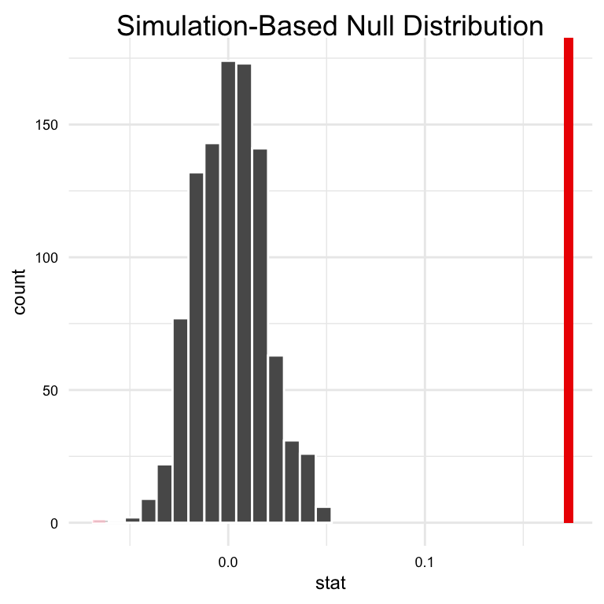
Note when generating the null hypothesis distribution, we use the hypothesize() function with the null argument set to “independence”. This is because we are interested in the relationship between the response and explanatory variables. The null hypothesis is that there is no relationship between the response and explanatory variables. When generating the samples, we use the permutation approach, which randomly shuffles the response variable values for each sample. This simulates the null hypothesis that there is no relationship between the response and explanatory variables.
When we plot the null distribution, we see that the statistic values cluster around \(0\), which is what we expect if there is no difference. We also see that our observed statistic is far away from the null distribution, which suggests that there is a difference in the proportion of NP realizations of the recipient clause by modality.
The p-value underscores this apparent difference. The p-value is reported as \(0\). To provide some context, we will generate a confidence interval for our observed statistic using the bootstrap method, as seen in Example 10.20.
Example 10.20
# Generate boostrap distribution
dative_boot <-
dative_spec |>
generate(reps = 1000, type = "bootstrap") |>
calculate(stat = "diff in props", order = c("spoken", "written"))
# Calculate the confidence interval
dative_ci <-
dative_boot |>
get_confidence_interval(level = 0.95)
# Visualize the bootstrap distribution with the confidence interval
dative_boot |>
visualize() +
shade_confidence_interval(
dative_ci # the confidence interval
)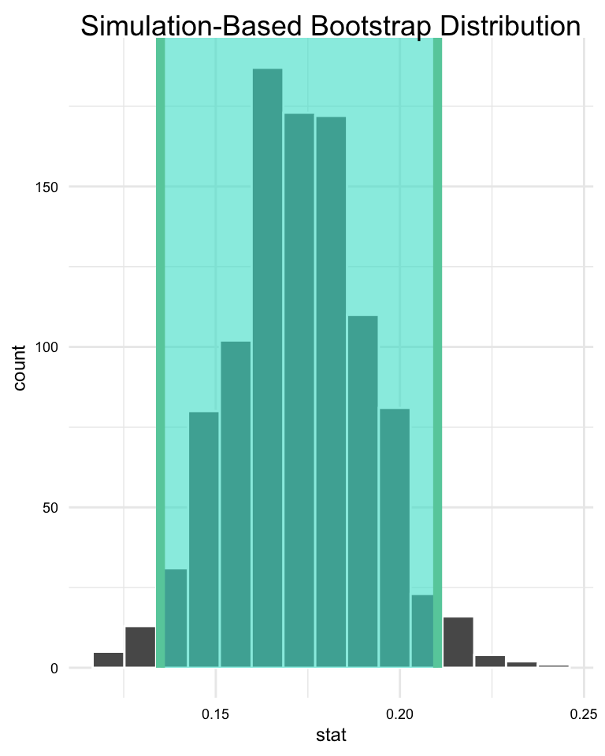
The confidence interval does not contain the null hypothesis value of 0, which provides evidence that the proportion of NP realizations of the recipient clause is different between the spoken and written modalities.
-
Add note on effect size for difference in proportions statistic?
- Effect size measures for difference in proportions is the difference in proportions?
We get effect size and confidence interval information. Note that the effect size for this relationship is weak. This points out an important aspect to evaluation of statistical tests. The fact that a test is significant does not mean that it is meaningful. A small effect size suggests that we should be cautious about the extent to which this significant finding is robust in the population from which the data is sampled.
Multivariate Analysis
In many scenarios, it is common to have multiple explanatory variables that need to be considered. In such cases, logistic regression is a suitable modeling technique. Logistic regression allows for the inclusion of both categorical and continuous explanatory variables. The primary objective of using logistic regression is to assess the association between these variables and the dependent variable. By analyzing this relationship, we can determine how changes in the explanatory variables influence the probability of the outcome occurring.
In our dative_df dataset, we can imagine asking the question:
- Is there a difference in the proportion of NP and PP realizations of the recipient clause by modality and length ratio?
The length ratio gets at the length of the recipient clause relative to the length of the theme clause. This ratio is an operationalization of a phenomenon known as ‘Heavy NP’ shift. There are many ways to operationalize this phenomenon, but the length ratio is a simple method to approximate the phenomenon. It attempts to capture the idea that the longer the theme clause is relative to the recipient clause, the more likely the recipient clause will be realized as an NP –in other words, when the theme is relatively longer than the recipient, the theme is ordered last in the sentence, and the recipient is ordered first in the sentence and takes the form of an NP (instead of a PP).
For example,
- John gave the book [to Mary]. (PP)
- John gave [Mary] the large book that I showed you in class yesterday. (NP)
The prediction, then, is that the example in (3) would be less likely than (2) because the theme is relatively longer than the recipient.
- John gave the book that I showed you in class yesterday [to Mary]. (PP)
Let’s consider this variable length_ratio and modality together as explanatory variables for the realizations of the recipient clause realization_of_rcp.
Let’s create the length_ratio variable by dividing the length_of_thm by the length_of_rcp. This will give us values larger than 1 when the theme is longer than the recipient. In Example 10.21, we see the code for creating the length_ratio variable.
Example 10.21
# Create the `length_ratio` variable
dative_df <-
dative_df |>
mutate(
length_ratio = length_of_thm / length_of_rcp
)
# Preview
dative_df |> glimpse()> Rows: 3,263
> Columns: 5
> $ realization_of_rcp <fct> NP, NP, NP, NP, NP, NP, NP, NP, NP, NP, NP, NP, NP,…
> $ modality <fct> written, written, written, written, written, writte…
> $ length_of_rcp <dbl> 1, 2, 1, 1, 2, 2, 2, 1, 1, 1, 2, 2, 1, 2, 1, 1, 4, …
> $ length_of_thm <dbl> 14, 3, 13, 5, 3, 4, 4, 1, 11, 2, 3, 3, 5, 2, 8, 2, …
> $ length_ratio <dbl> 14.00, 1.50, 13.00, 5.00, 1.50, 2.00, 2.00, 1.00, 1…Let’s visualize the relationship between realization_of_rcp and length_ratio separately and then together with modality, as seen in Example 10.22.
Example 10.22
# Visualize the relationship between `realization_of_rcp` and `length_ratio`
p1 <-
dative_df |>
ggplot(aes(x = realization_of_rcp, y = length_ratio)) +
geom_boxplot() +
labs(
x = "Realization of recipient clause",
y = "Length ratio"
)
p1
# Visualize the relationship between `realization_of_rcp` and `length_ratio` by `modality`
p1 +
facet_wrap(~ modality)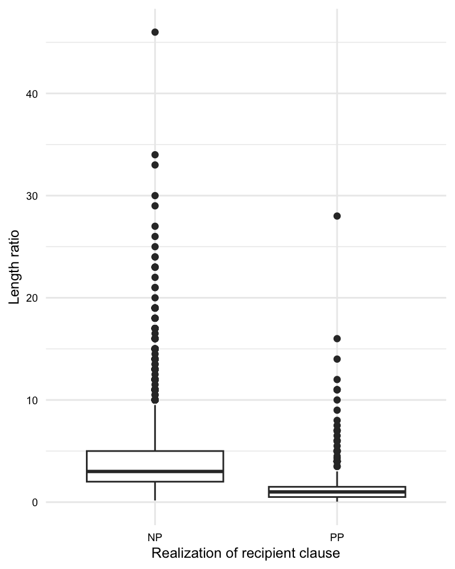
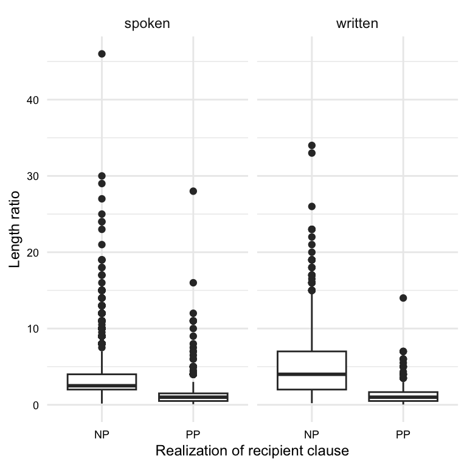
realization_of_rcp variable by the levels of the modality variable and length_ratio variable.Before jumping in here, the outliers should catch our attention. Each boxplot has a number of outliers. These outliers are likely due to the fact that the length_ratio variable is built upon the length_of_thm and length_of_rcp variables, which are both highly skewed. This is a common problem in statistical inference. The solution is to transform the variables to reduce the skewness. In this case, we can use the log transformation, as seen in Example 10.23.
Example 10.23
# Log transform the `length_ratio` variable
dative_df <-
dative_df |>
mutate(
length_ratio_log = log10(length_ratio)
)
dative_df |> glimpse()> Rows: 3,263
> Columns: 6
> $ realization_of_rcp <fct> NP, NP, NP, NP, NP, NP, NP, NP, NP, NP, NP, NP, NP,…
> $ modality <fct> written, written, written, written, written, writte…
> $ length_of_rcp <dbl> 1, 2, 1, 1, 2, 2, 2, 1, 1, 1, 2, 2, 1, 2, 1, 1, 4, …
> $ length_of_thm <dbl> 14, 3, 13, 5, 3, 4, 4, 1, 11, 2, 3, 3, 5, 2, 8, 2, …
> $ length_ratio <dbl> 14.00, 1.50, 13.00, 5.00, 1.50, 2.00, 2.00, 1.00, 1…
> $ length_ratio_log <dbl> 1.146, 0.176, 1.114, 0.699, 0.176, 0.301, 0.301, 0.…Now we can plot the relationships in Figure 10.10 with the log-transformed length_ratio, seen in Example 10.24.
Example 10.24
# Visualize the relationship between `realization_of_rcp` and `length_ratio`
p1 <-
dative_df |>
ggplot(aes(x = realization_of_rcp, y = length_ratio_log)) +
geom_boxplot() +
labs(
x = "Realization of recipient clause",
y = "Length ratio (log)"
)
p1
# Visualize the relationship between `realization_of_rcp` and `length_ratio` by `modality`
p1 +
facet_wrap(~ modality)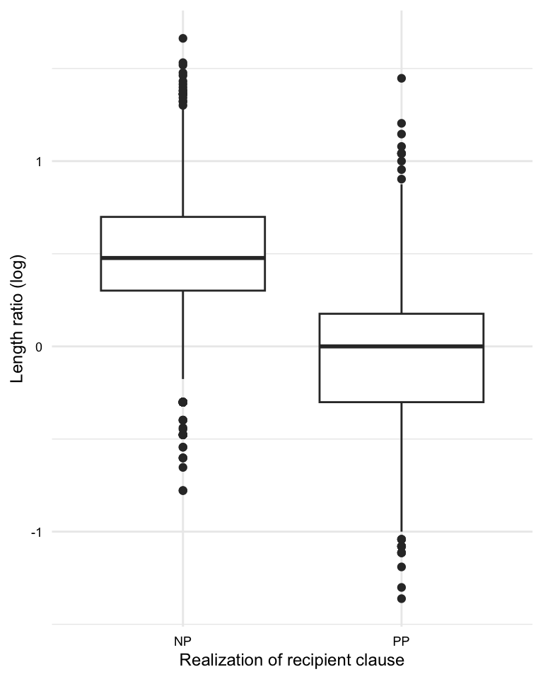
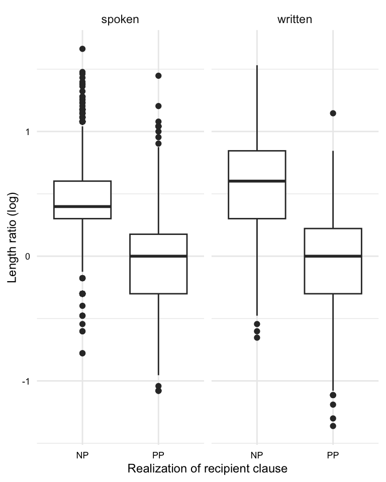
realization_of_rcp variable by the levels of the modality variable and length_ratio variable with log transformation.The log transformation has reduced the skewness of the length_ratio variable. Note that the log transformation does not change the rank order of the values, but it does change the scale of the values (the distance between the values) by reducing the magnitude of the values. The boxplots in Figure 10.11 still have outliers, but there are fewer outliers and they are not as extreme.
Now we can return to our question:
- Is there a difference in the proportion of NP and PP realizations of the recipient clause by modality and length ratio?
We can answer this question using a logistic regression. The null hypothesis is that there is no difference in the proportion of NP and PP realizations of the recipient clause by modality and length ratio. The alternative hypothesis is that there is a difference in the proportion of NP and PP realizations of the recipient clause by modality and length ratio.
Let’s calculate the statistics (not statistic) for our logistic regression by specifying the relationship between the response and explanatory variables and then using fit() to fit the logistic regression model, as seen in Example 10.25.
Example 10.25
# Specify the relationship between the response and explanatory variables
dative_spec <-
dative_df |>
specify(
realization_of_rcp ~ modality + length_ratio_log
)
# Fit the logistic regression model
dative_fit <-
dative_spec |>
fit()
dative_fit > # A tibble: 3 × 2
> term estimate
> <chr> <dbl>
> 1 intercept -0.563
> 2 modalitywritten 1.01
> 3 length_ratio_log -3.76Note I pointed out statistics, not statistic. In logistic regression models, there the number of statistic reported depends on the number of explanatory variables. If there are two variables there will be at least three terms, one for each variable and the intercept term. If one or more variables are categorical, however, there will be additional terms when the categorical variable has three or more levels.
In our case, the modality variable has two levels, so there are three terms. The first term is the intercept term, which is the log odds of the proportion of NP realizations of the recipient clause in the written modality when the length_ratio is 1. The second term is the log odds of the proportion of NP realizations of the recipient clause in the spoken modality when the length_ratio is 1. The third term is the log odds of the proportion of NP realizations of the recipient clause when the length_ratio is 1 in the written modality. Notable the spoken modality does not explicitly appear but is implicitly represented the modalitywritten term statistic. It is used as the reference level for the modality variable.
The statistics returned in logistic regression are log odds. Odds are the ratio of the probability of an event occurring to the probability of an event not occurring. Log odds are the natural log of the odds. If we would like to return the statistic as the odds ratio, we can use the exp() function, as seen in Example 10.26.
Example 10.26
# Calculate the odds ratio by exponentiating the log odds
dative_fit <-
dative_fit |>
mutate(
odds_ratio = exp(estimate)
)
dative_fit> # A tibble: 3 × 3
> term estimate odds_ratio
> <chr> <dbl> <dbl>
> 1 intercept -0.563 0.569
> 2 modalitywritten 1.01 2.75
> 3 length_ratio_log -3.76 0.0233- TODO: Interpret the odds ratio
The log odds for writtenmodality is 1.01. This means that the odds of the proportion of NP realizations of the recipient clause in the written modality when the length_ratio is 1 is 2.75 times the odds of the proportion of NP realizations of the recipient clause in the spoken modality when the length_ratio is 1.
On the other hand, the log odds for length_ratio is -3.76. In this case the length_ratio log odds can be interpreted as the log odds of the proportion of NP realizations of the recipient clause as a function of the length_ratio when the modality is the spoken modality. This is because the modality variable is the reference level.
? length_ratio_log has was log-transformed with a base of 10. This means that the odds ratio can be exponentiated with a base of 10, to return the odds ratio as a function of the length_ratio values, as seen in Example 10.27.
Example 10.27
# Calculate the odds ratio by exponentiating the log odds with a base of 10
dative_fit <-
dative_fit |>
mutate(
odds_ratio = case_when(
term == "length_ratio_log" ~ 10^odds_ratio,
TRUE ~ exp(estimate)
)
)
dative_fit> # A tibble: 3 × 3
> term estimate odds_ratio
> <chr> <dbl> <dbl>
> 1 intercept -0.563 0.569
> 2 modalitywritten 1.01 2.75
> 3 length_ratio_log -3.76 1.06So the odds ratio for length_ratio is 1.055 when the modality is the written modality.
So our logistic regression model as specified considers each explanatory variable independently, controlling for the other explanatory variable. This is an additive model, which is what we stated in our formula y ~ x1 + x2. We can also specify an interaction between the explanatory variables, as seen in Example 10.28.
Example 10.28
# Specify the relationship between the response and explanatory variables
dative_inter_spec <-
dative_df |>
specify(
realization_of_rcp ~ modality * length_ratio_log
)
dative_inter_spec> Response: realization_of_rcp (factor)
> Explanatory: modality (factor), length_ratio_log (numeric)
> # A tibble: 3,263 × 3
> realization_of_rcp modality length_ratio_log
> <fct> <fct> <dbl>
> 1 NP written 1.15
> 2 NP written 0.176
> 3 NP written 1.11
> 4 NP written 0.699
> 5 NP written 0.176
> 6 NP written 0.301
> 7 NP written 0.301
> 8 NP written 0
> 9 NP written 1.04
> 10 NP written 0.301
> # ℹ 3,253 more rowsReplacing the + with a * tells the model to consider the interaction between the explanatory variables. The interaction is the effect of one explanatory variable on the response variable is dependent on the other explanatory variable. In our case, the interaction is the effect of the length_ratio on the proportion of NP realizations of the recipient clause is dependent on the modality.
An model with an interaction changes the terms and the estimates. In Example 10.29, we see the terms for the logistic regression model with an interaction.
Example 10.29
# Fit the logistic regression model
dative_inter_fit <-
dative_inter_spec |>
fit()
dative_inter_fit> # A tibble: 4 × 2
> term estimate
> <chr> <dbl>
> 1 intercept -0.549
> 2 modalitywritten 0.958
> 3 length_ratio_log -3.88
> 4 modalitywritten:length_ratio_log 0.317The additional term modalitywritten:length_ratio_log is the interaction term. We also see the log odds estimates have changed for the previous terms. This is because this interaction draws some of the explanatory power from the other terms. Whether or not we run an interaction model depends on our research question. Whether or not the interaction term, or the other main terms, adds evidence to reject the null hypothesis, is the next step to consider.
Let’s return to our additive model and generate the null hypothesis distribution, visualize the p-value range, and calculate the p-value for each of the terms, as seen in Example 10.30.
Example 10.30
# Generate the null hypothesis distribution
dative_null <-
dative_spec |>
hypothesize(null = "independence") |>
generate(reps = 1000, type = "permute") |>
fit()
# Visualize the null hypothesis distribution with the observed statistics
dative_null |>
visualize() +
shade_p_value(
dative_fit, # the observed statistics
direction = "two-sided" # the direction of the alternative hypothesis
)
# Calculate the p-value
dative_null |>
get_p_value(
dative_fit, # the observed statistics
direction = "two-sided" # the direction of the alternative hypothesis
)> # A tibble: 3 × 2
> term p_value
> <chr> <dbl>
> 1 intercept 0
> 2 length_ratio_log 0
> 3 modalitywritten 0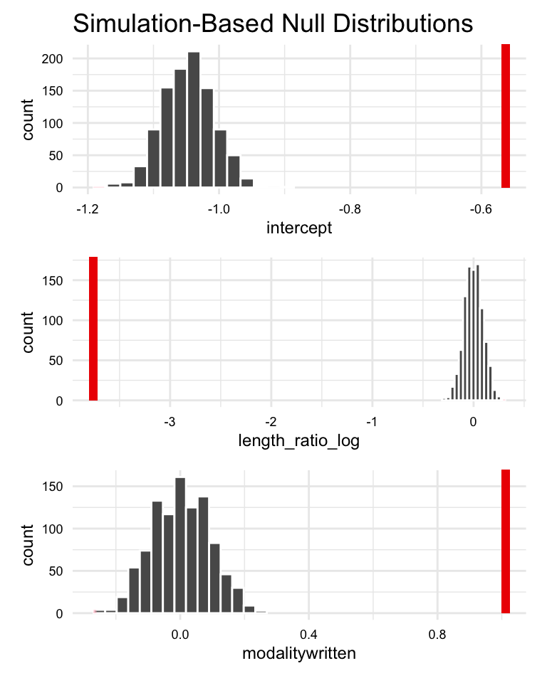
It appears that our main effects, modality and length_ratio, are statistically significant. Let’s generate the confidence intervals for each of the terms, as seen in Example 10.31.
Example 10.31
# Generate boostrap distribution
dative_boot <-
dative_spec |>
generate(reps = 1000, type = "bootstrap") |>
fit()
# Calculate the confidence interval
dative_ci <-
dative_boot |>
get_confidence_interval(
point_estimate = dative_fit, # the observed statistics
level = 0.95
)
# Visualize the bootstrap distribution with the confidence interval
dative_boot |>
visualize() +
shade_confidence_interval(
dative_ci # the confidence interval
)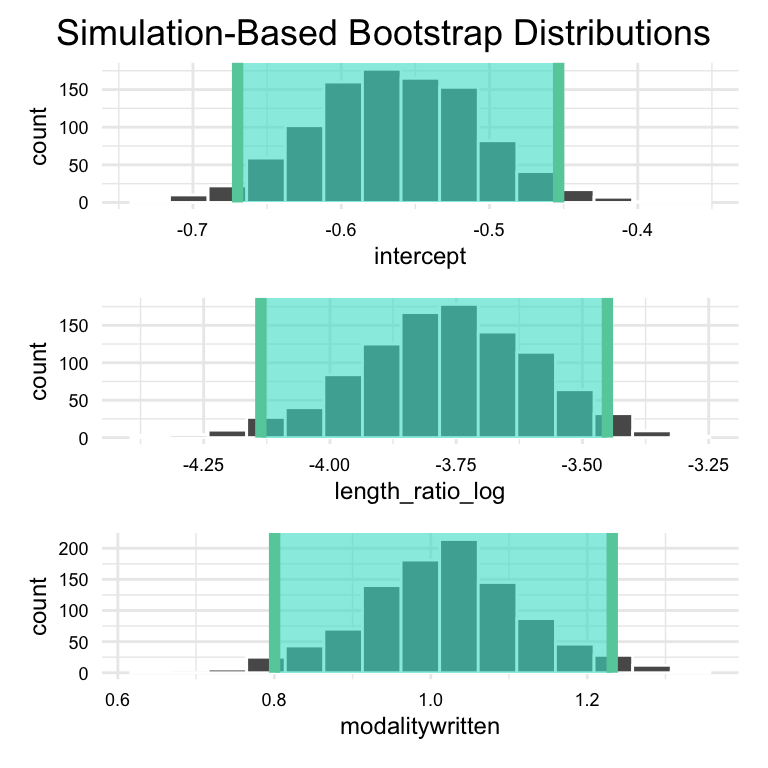
The confidence intervals for the main effects, modality and length_ratio, do not contain the null hypothesis value of 0, which provides evidence that each of the explanatory variables is related to the proportion of NP realizations of the recipient clause.
We can quantify the effect size of each of the explanatory variables using the odds ratio to calculate the \(r\) and \(R^2\) values. We can use the logoddsratio_to_r() function from effectsize package to calculate the \(r\) value and then square the \(r\) value to calculate the \(R^2\) value, as seen in Example 10.32.
Example 10.32
# Calculate the effect size
dative_fit <-
dative_fit |>
mutate(
r = logoddsratio_to_r(estimate),
r_squared = r^2
)
dative_fit> # A tibble: 3 × 5
> term estimate odds_ratio r r_squared
> <chr> <dbl> <dbl> <dbl> <dbl>
> 1 intercept -0.563 0.569 -0.153 0.0235
> 2 modalitywritten 1.01 2.75 0.269 0.0722
> 3 length_ratio_log -3.76 1.06 -0.720 0.518Beyond the estimates to quantify the likelihood that the null hypothesis is true, the effect size provides a measure of the strength of the relationship between the response and explanatory variables. The \(r\) value is the correlation coefficient, which is a measure of the strength of the linear relationship between the response and explanatory variables. The \(R^2\) value is the coefficient of determination, which is a measure of the proportion of the variance in the response variable that is explained by the explanatory variables.
As you can imagine, the larger the \(R^2\) value, the stronger the relationship between the response and explanatory variables. From our effect size evaluation, the length_ratio variable has a stronger relationship with the proportion of NP realizations of the recipient clause than the modality variable.
Now, knowing “how” strong a given value is can be a little less intuitive. The effectsize package provides some guidelines for interpreting effect size measures. Let’s use the interpret_r2() function to interpret the \(R^2\) value, as seen in Example 10.33.
Example 10.33
# Interpret the R^2 value
dative_fit |>
mutate(
r2_interpretation = interpret_r2(r_squared)
)> # A tibble: 3 × 6
> term estimate odds_ratio r r_squared r2_interpretation
> <chr> <dbl> <dbl> <dbl> <dbl> <effctsz_>
> 1 intercept -0.563 0.569 -0.153 0.0235 weak
> 2 modalitywritten 1.01 2.75 0.269 0.0722 weak
> 3 length_ratio_log -3.76 1.06 -0.720 0.518 substantialWhile the effects for modality and length_ratio are statistically significant, the effect size for modality is small and the effect size for length_ratio is much stronger. This can help inform our interpretation of the results.
10.2.2 Numeric
We now turn our attention to the analysis scenarios where the response variable is numeric. Just as for categorical variables, we can have univariate, bivariate, and multivariate analysis scenarios. The statistical tests for numeric variables are summarized in Table 10.7.
| Scenario | Dependent variable | Independent variable(s) | Statistical test |
|---|---|---|---|
| Univariate | Numeric | None | Mean |
| Bivariate | Numeric | Numeric | Correlation |
| Bivariate | Numeric | Categorical | Difference in means |
| Multivariate | Numeric | Numeric or Categorical (2+) | Linear regression |
The dataset we will use here is fillers_df. The data dictionary is found in Table 10.8.
| variable | name | variable_type | description |
|---|---|---|---|
| speaker_id | Speaker ID | numeric | Unique identifier for each speaker |
| age | Age | numeric | Age of the speaker in years |
| sex | Sex | categorical | Gender of the speaker |
| education | Education | ordinal | Level of education attained by the speaker |
| fillers_per_100 | Fillers per 100 | numeric | Number of filler words used per 100 utterances |
| total_fillers | Total Fillers | numeric | Total number of filler words used |
| total_utterances | Total Utterances | numeric | Total number of utterances made by the speaker |
We see the dataset has [FOUR FIXME] variables. The fillers_per_100 will be used as our reponse variable and corresponds to the rate of filler usage per speaker, normalized by the number of utterances. The other variables we will consider as explanatory variables are age, sex, and education, providing us a mix of numeric and categorical variables.
The context for these analysis demonstrations comes from the socio-linguistic literature on the use of filled pauses. Filled pauses have often been associated with a type of disfluency; speech errors that occur during speech production. However, some authors have argued that filled pauses can act as sociolinguistic markers of socio-demographic characterstics of speakers, such as gender, age, and educational level (Shriberg 1994; Tottie 2011).
Let’s prepare these datasets for analysis by converting the categorical variables to factors and ordering the education variable, as seen in Example 10.34.
Example 10.34
# Establish level names and order for the `education` variable
edu_levels <-
c("More Than College",
"College",
"Less Than College",
"Less Than High School",
"Unknown")
# Convert categorical variables to factors
fillers_df <-
fillers_df |>
mutate(
sex = factor(sex),
education = factor(education, levels = edu_levels, ordered = TRUE)
)
# Preview
glimpse(fillers_df)> Rows: 441
> Columns: 7
> $ speaker_id <dbl> 1000, 1001, 1002, 1004, 1005, 1007, 1008, 1010, 1011,…
> $ age <dbl> 38, 52, 29, 34, 36, 27, 53, 60, 28, 35, 45, 25, 47, 3…
> $ sex <fct> Female, Male, Female, Female, Female, Female, Female,…
> $ education <ord> Less Than College, More Than College, College, Colleg…
> $ fillers_per_100 <dbl> 2.14, 25.34, 4.13, 2.41, 3.79, 0.00, 8.33, 1.82, 5.22…
> $ total_fillers <dbl> 44, 263, 54, 45, 129, 0, 27, 2, 54, 130, 135, 14, 152…
> $ total_utterances <dbl> 2052, 1038, 1308, 1866, 3400, 278, 324, 110, 1034, 20…Our fillers_df dataset has 441 observations. Again, we will postpone more descriptive statistics for treatment in the particular scenarios.
Univariate analysis
In hypothesis testing, the analysis of a single variable is directed at determining whether or not the distribution or statistic of the variable differs from some expected distribution or statistic. In the case of a single categorical variable with two levels (as in the datives case), we sampled from a binomial distribution by chance. In the case of a single numeric variable, we can sample and compare the observed distribution to a theoretical distribution. When approaching hypothesis testing from a theoretical perspective, it is often necessary to assess how well a numeric variable fits the normal distribution as many statistical tests assume that the data are normally distributed. However, we have adopted the simulation-based approach to hypothesis testing, which does not require that the data fit the normal distribution, or any other distribution for that matter.
The other approach to analyzing a single numeric variable is to compare an observed statistic to an expected statistic. This approach requires a priori knowledge of the expected statistic. For example, imagine we are interested testing the hypothesis that the length of words in a medical corpus tend to be longer than the average length of words in English. We would then calculate the observed mean for the length of words in the medical corpus and then generate a null distribution of means for the length of words in English, as in Example 10.35.
Example 10.35
Note that instead of a p = argument, as was used in the hypothesize() step to generate a null distribution of proportions, we use a mu = argument in Example 10.35 to specify the expected mean. The rest of the hypothesis testing workflow is the same as for the null distribution of proportions.
In our case, we do not have a priori knowledge of the expected statistic for the fillers_per_100 variable, so we will not pursue this approach. However, when looking at the distribution of a numeric variable, it is useful to look at the descriptive statistics the mean, median, and standard deviation in order to get a sense of the central tendency and spread of the data.
We can use the skim() function to get the mean, median, and standard deviation of the fillers_per_100 variable, as seen in Example 10.36.
Example 10.36
fillers_df |>
skim(fillers_per_100)| Name | fillers_df |
| Number of rows | 441 |
| Number of columns | 7 |
| _______________________ | |
| Column type frequency: | |
| numeric | 1 |
| ________________________ | |
| Group variables | None |
Variable type: numeric
| skim_variable | n_missing | complete_rate | mean | sd | p0 | p25 | p50 | p75 | p100 | hist |
|---|---|---|---|---|---|---|---|---|---|---|
| fillers_per_100 | 0 | 1 | 9.19 | 7.03 | 0 | 4.11 | 7.95 | 13.2 | 52.8 | ▇▃▁▁▁ |
The mean is larger than the median which suggests that the distribution is right-skewed. Furthermore, the standard deviation is large relative to the mean, which suggests that there is a lot of variability in the data.
To get a sense of the distribution of the fillers_per_100 variable, we can plot a histogram and density plot, as seen in Example 10.37.
Example 10.37
# Histogram
fillers_df |>
ggplot(aes(x = fillers_per_100)) +
geom_histogram(bins = 50) +
labs(x = "Fillers per 100 utterances", y = "Count") +
theme_bw()
# Density plot
fillers_df |>
ggplot(aes(x = fillers_per_100)) +
geom_density() +
labs(x = "Fillers per 100 utterances", y = "Density") +
theme_bw()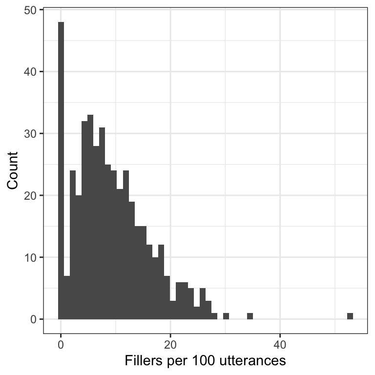
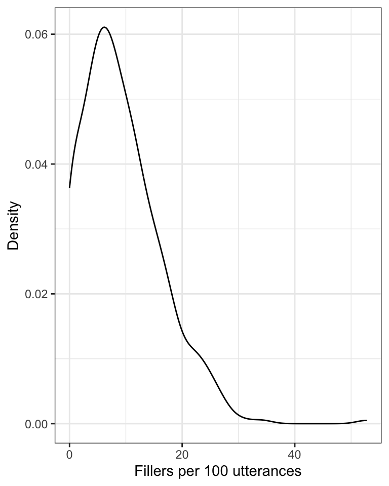
fillers_per_100 variableThe distribution of fillers_per_100 is indeed skewed to the right. We might have predicted this given that we are working with ratio based on count data, perhaps not. In any case, the skewing we observe tends to compress the distribution and may make it difficult to see any patterns. To mitigate this, we can log transform the variable. But we will run into a problem if we have any speakers who do not use any fillers at all as these speakers will have a value of zero, as we can see in Figure 10.14 (b). The log of zero is undefined. So we need to address this.
Eliminating the speakers who do not use any fillers at all is one option. This is quite extreme as we may lose quite a few speakers and it is not clear that removing data in this way will not cause inordinate bias in the results as these speakers may be different in some way from the rest of the speakers. Looking at the speakers with zero fillers in Example 10.38, we can see that there is some potential for bias.
Example 10.38
Another approach is to add a small value to the fillers_per_100 variable, for all speakers. This will allow us to log transform the variable and will likely not have any (or very little) impact on the results. It also allows us to keep these speakers.
Adding values can be done in one of two ways. We can add a small constant value to all speakers, or we can add a small random value to all speakers. The former is easier to implement, but means that we will still have a spike in the distribution at the value of the constant. Since we do not expect that speakers that did not use fillers at all would never do so and that when they do we would not expect them to be at exactly the same rate as other speakers, we can add a small random value to all speakers.
In R, we can use the jitter() function to add a small amount of random noise to the variable. Note, however, this random noise can be positive or negative. When a negative value is added to a zero value, we are still in trouble. So we need to make sure that none of the jitter produces negative values. We can do this by simply taking the absolute value of the jittered variable with the abs() function. Let’s see how this works in Example 10.39.
Example 10.39
# Set seed for reproducibility
set.seed(1234)
# Add jitter to fillers
fillers_df <-
fillers_df |>
mutate(fillers_per_100_jitter = abs(jitter(fillers_per_100)))
fillers_df> # A tibble: 441 × 8
> speaker_id age sex education fillers_per_100 total_fillers
> <dbl> <dbl> <fct> <ord> <dbl> <dbl>
> 1 1000 38 Female Less Than College 2.14 44
> 2 1001 52 Male More Than College 25.3 263
> 3 1002 29 Female College 4.13 54
> 4 1004 34 Female College 2.41 45
> 5 1005 36 Female College 3.79 129
> 6 1007 27 Female College 0 0
> 7 1008 53 Female Less Than College 8.33 27
> 8 1010 60 Male Less Than College 1.82 2
> 9 1011 28 Female College 5.22 54
> 10 1013 35 Female College 6.23 130
> # ℹ 431 more rows
> # ℹ 2 more variables: total_utterances <dbl>, fillers_per_100_jitter <dbl>The results from Example 10.39 show that the fillers_per_100_jitter variable has been added to the fillers_df dataset and that zero values for fillers_per_100 now have a small amount of random noise added to them. Note, that the other values also have a small amount of random noise added to them, but it is so small that rounding to 2 decimal places makes it look like nothing has changed.
Now let’s return to log transforming the fillers_per_100_jitter variable. We can do this with the log() function. Let’s see how this works in Example 10.40.
Example 10.40
# Log transform fillers (with jitter)
fillers_df <-
fillers_df |>
mutate(fillers_per_100_log = log(fillers_per_100_jitter))
fillers_df> # A tibble: 441 × 9
> speaker_id age sex education fillers_per_100 total_fillers
> <dbl> <dbl> <fct> <ord> <dbl> <dbl>
> 1 1000 38 Female Less Than College 2.14 44
> 2 1001 52 Male More Than College 25.3 263
> 3 1002 29 Female College 4.13 54
> 4 1004 34 Female College 2.41 45
> 5 1005 36 Female College 3.79 129
> 6 1007 27 Female College 0 0
> 7 1008 53 Female Less Than College 8.33 27
> 8 1010 60 Male Less Than College 1.82 2
> 9 1011 28 Female College 5.22 54
> 10 1013 35 Female College 6.23 130
> # ℹ 431 more rows
> # ℹ 3 more variables: total_utterances <dbl>, fillers_per_100_jitter <dbl>,
> # fillers_per_100_log <dbl>Let’s now plot the log-transformed variable, as seen in Example 10.41.
Example 10.41
# Histogram
fillers_df |>
ggplot(aes(x = fillers_per_100_log)) +
geom_histogram(bins = 50) +
labs(x = "Fillers per 100 utterances (log)", y = "Count")
# Density plot
fillers_df |>
ggplot(aes(x = fillers_per_100_log)) +
geom_density() +
labs(x = "Fillers per 100 utterances (log)", y = "Density")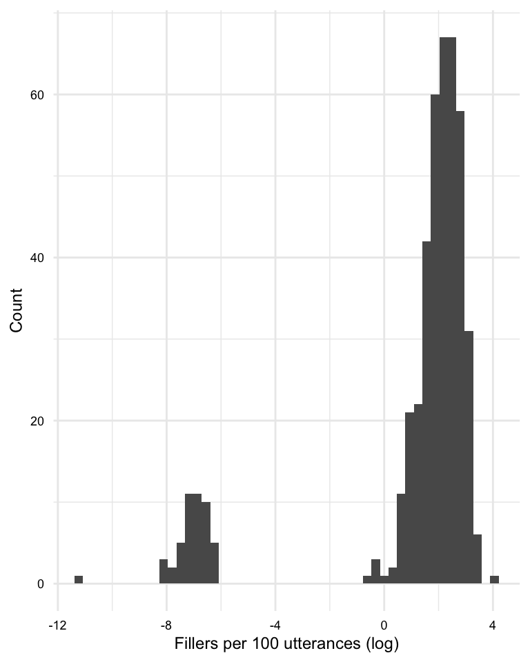
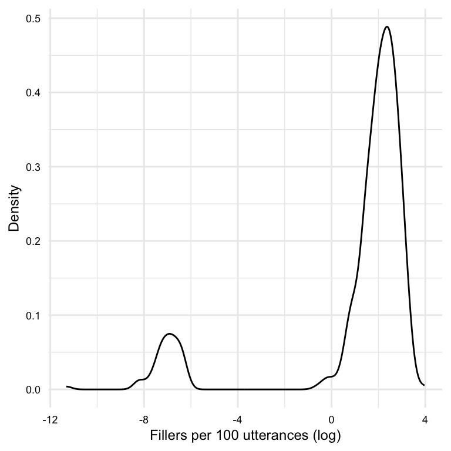
fillers_per_100_log variableThe distribution of the log-transformed variable is more spread out now, but the zero-filler speakers do show a low-level spike in the left tail of the distribution. Jitter and log-transformation, however, smooth over their effect to a large degree.
Let’s drop some of the variables we no longer need and proceed with the log-transformed variable, as seen in Example 10.42.
Example 10.42
# Drop variables
fillers_df <-
fillers_df |>
select(sex, education, age, fillers_per_100_log)Bivariate analysis
When considering a numeric reponses variable and another variable, it is key to consider the nature of the other variable. If it is a categorical variable with two levels, then we can compare a statistic between the two groups (mean or median). If it is categorical with more than two levels, the F statistic is used to compare the means. Finally, if it is a numeric variable, then we can use a correlation test to see if there is an association between the two variables.
Let’s approach each of these bivariate scenarios in turn.
The datives_df contains the sex variable which is a categorical variable with two levels. According to the literature, filled pauses are associated with differences between men and women Tottie (2014). Sex is one of the variables associated with the rate of filled pauses. The findings suggest that men use fillers at a higher rate than women. Let’s test to see if this holds for the SWDA data.
Let’s first explore the distribution from a descriptive point of view. With a numeric response variable fillers_per_100_log and a categorical explanatory variable sex, a boxplot is a natural fit. Let’s add a density plot with a sex overlay in Example 10.43.
Example 10.43
fillers_df |>
ggplot(aes(y = fillers_per_100_log, x = sex)) +
geom_boxplot(notch = TRUE) +
labs(
y = "Filler use (log)",
x = "Sex"
)
fillers_df |>
ggplot(aes(x = fillers_per_100_log, fill = sex)) +
geom_density(alpha = 0.5) +
labs(
x = "Filler use (log)",
fill = "Sex"
)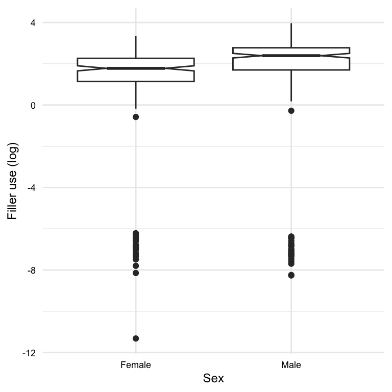
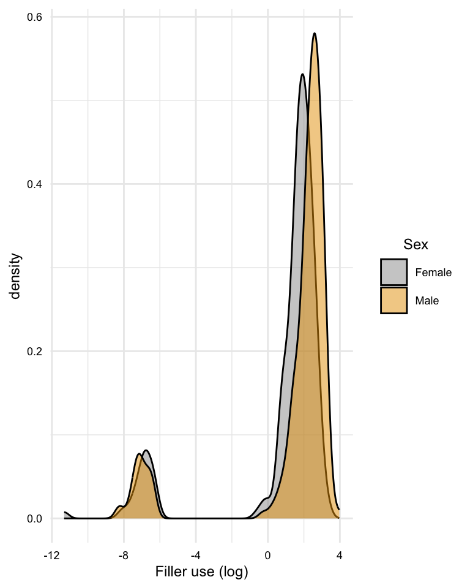
fillers_per_100_log variable by sexLooking at the boxplot in Figure 10.16 (a), we see that the appears to be an overall higher rate of filler use for men, compared to women. We also can see that the random noise added to zero-rate speakers appear as outliers in the left tail. The density plot in Figure 10.16 (b) confirms this and allows us to see the overlap between the two groups. We see that the density distribution is not as concentrated and is slightly lower than that of men.
Let’s follow the simulation-based hypothesis testing workflow and investigate if the apparent difference between men and women is statistically significant, or expected by chance. The first steps are found in Example 10.44.
Example 10.44
# Specify the relationship
fillers_spec <-
fillers_df |>
specify(fillers_per_100_log ~ sex) # response ~ explanatory
# Observed statistic
fillers_obs <-
fillers_spec |>
# diff in means, Male - Female
calculate(stat = "diff in means", order = c("Male", "Female"))
# Null distribution
fillers_null <-
fillers_spec |>
hypothesize(null = "independence") |> # independence = no relationship
generate(reps = 1000, type = "permute") |> # permute = shuffle
calculate(stat = "diff in means", order = c("Male", "Female"))
# Visualize the null distribution w/ observed statistic
fillers_null |>
visualize() +
shade_p_value(obs_stat = fillers_obs, direction = "greater") # expect greater
# Calculate the p-value
fillers_null |>
get_p_value(obs_stat = fillers_obs, direction = "greater")> # A tibble: 1 × 1
> p_value
> <dbl>
> 1 0.033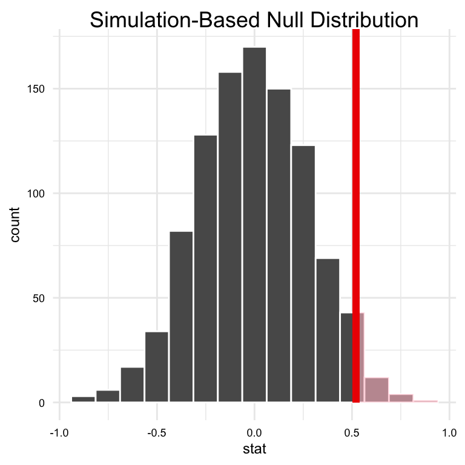
fillers_per_100_log variable by sexFrom the analysis performed in Example 10.44, we can reject the null hypothesis that there is no difference between the rate of filler use between men and women, as the p-value is greater less than 0.05.
To further assess the uncertainty of the observed statistic, and the robustness of the difference, we calculate a confidence interval, as seen in Example 10.45.
Example 10.45
# Resampling distribution
fillers_boot <-
fillers_spec |>
generate(reps = 1000, type = "bootstrap") |>
calculate(stat = "diff in means", order = c("Male", "Female"))
# Calculate the confidence interval
fillers_ci <-
fillers_boot |>
get_ci(level = 0.95)
fillers_ci> # A tibble: 1 × 2
> lower_ci upper_ci
> <dbl> <dbl>
> 1 -0.00378 1.05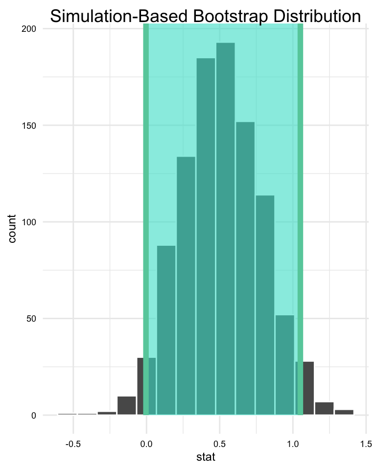
The confidence interval includes 0, which suggests that the observed difference is questionable. It is of note, however, that the majority of the interval is above 0, which provides some evidence that the observed difference is not due to chance.
This result highlights how p-values and confidence intervals together can provide a more nuanced picture of the data.
The second bivariate scenario we can consider is when the explanatory variable is categorical with more than two levels. In this case, we can use the F statistic to compare the means of the different levels. The education variable in the fillers_df dataset is a categorical variable with five levels. Tottie (2011) suggests that more educated speakers use more fillers than less educated speakers. Let’s test this hypothesis.
First, we visualize the distribution of the fillers_per_100_log variable by education, as seen in Example 10.46.
Example 10.46
# Boxplot
fillers_df |>
ggplot(aes(y = fillers_per_100_log, x = education)) +
geom_boxplot(notch = TRUE) +
labs(
y = "Filler use (log)",
x = "Education"
)
fillers_per_100_log variable by educationThe boxplot in Figure 10.19 does not point to any obvious differences between the levels of the education variable. There are a fair number of outliers, however, in the two most educated groups. These outliers are likely due to the random noise added to the 0-rate speakers and it is interesting that they are concentrated in the two most educated groups.
Let’s now submit these variables to the simulation-based hypothesis testing workflow to quantify the uncertainty of the observed statistic and determine if the observed difference is statistically significant. The first steps are found in Example 10.47.
Example 10.47
# Specify the relationship
fillers_spec <-
fillers_df |>
specify(fillers_per_100_log ~ education) # response ~ explanatory
# Observed statistic
fillers_obs <-
fillers_spec |>
calculate(stat = "F") # F = variance between groups / variance within groups
# Null distribution
fillers_null <-
fillers_spec |>
hypothesize(null = "independence") |> # independence = no relationship
generate(reps = 1000, type = "permute") |> # permute = shuffle
calculate(stat = "F")
# Visualize the null distribution w/ observed statistic
fillers_null |>
visualize() +
shade_p_value(obs_stat = fillers_obs, direction = "two-sided") # expect greater
# Calculate the p-value
fillers_null |>
get_p_value(obs_stat = fillers_obs, direction = "two-sided")> # A tibble: 1 × 1
> p_value
> <dbl>
> 1 0.426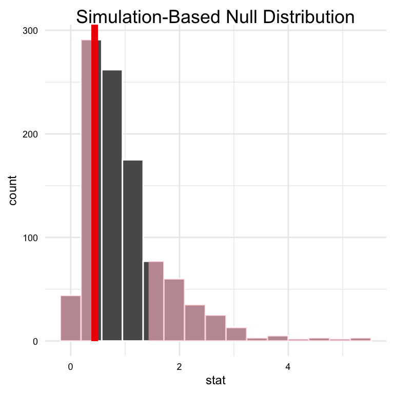
fillers_per_100_log variable by educationThe analysis in Example 10.47 suggests that the observed difference between the means of the different levels of the education variable not significantly different from what we would expect by chance.
Let’s now calculate a confidence interval to assess the uncertainty of the observed statistic, as seen in Example 10.48.
Example 10.48
# Resampling distribution
fillers_boot <-
fillers_spec |>
generate(reps = 1000, type = "bootstrap") |>
calculate(stat = "F")
# Calculate the confidence interval
fillers_ci <-
fillers_boot |>
get_ci(level = 0.95)
fillers_ci> # A tibble: 1 × 2
> lower_ci upper_ci
> <dbl> <dbl>
> 1 0.123 4.57
In Example 10.48, we see that we are in the opposite situation –the p-value is not significant and but the confidence interval does not include 0. So how do we interpret this? Remember, the p-value is the probability of observing a statistic as extreme or more extreme than the observed statistic, given that the null hypothesis is true. The confidence interval is the range of values that we are 95% confident contains the true population parameter. We should take into consideration two aspects: (1) the confidence interval has a large range (the interval is wide) and (2) that the lower limit is near 0. Take together and in addition to the p-value, we can conclude that the observed difference is not statistically significant, and if there is a difference, it is likely to be small or negligible.
The last bivariate case is when the explanatory variable is numeric. In this case, we can use a correlation test to see if there is an association between the two variables. The age variable in the fillers_df dataset is a numeric variable. Tottie (2011) suggests that older speakers use more fillers than younger speakers. Let’s test this hypothesis.
First, we visualize the distribution of the fillers_per_100_log variable by age, as seen in Example 10.49.
Example 10.49
# Scatterplot
fillers_df |>
ggplot(aes(x = age, y = fillers_per_100_log)) +
geom_point() +
geom_smooth(method = "lm") +
labs(
x = "Age",
y = "Filler use (log)"
)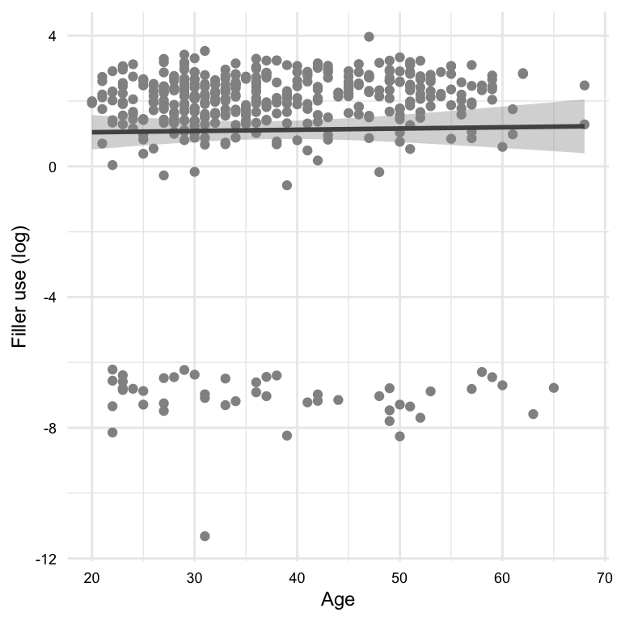
fillers_per_100_log variable by ageThe trend line in Figure 10.22 does not suggest that there is a strong relationship between the two variables, or even if there is a relationship at all. We can see that the rate of filler use appears constant across the age range.
Let’s now submit these variables to the simulation-based hypothesis testing workflow to quantify the uncertainty of the observed statistic and determine if the observed difference is statistically significant. The first steps are found in Example 10.50.
Example 10.50
# Specify the relationship
fillers_spec <-
fillers_df |>
specify(fillers_per_100_log ~ age) # response ~ explanatory
# Observed statistic
fillers_obs <-
fillers_spec |>
calculate(stat = "correlation") # correlation = r
# Null distribution
fillers_null <-
fillers_spec |>
hypothesize(null = "independence") |> # independence = no relationship
generate(reps = 1000, type = "permute") |> # permute = shuffle
calculate(stat = "correlation")
# Visualize the null distribution w/ observed statistic
fillers_null |>
visualize() +
shade_p_value(obs_stat = fillers_obs, direction = "two-sided") # expect greater
# Calculate the p-value
fillers_null |>
get_p_value(obs_stat = fillers_obs, direction = "two-sided")> # A tibble: 1 × 1
> p_value
> <dbl>
> 1 0.762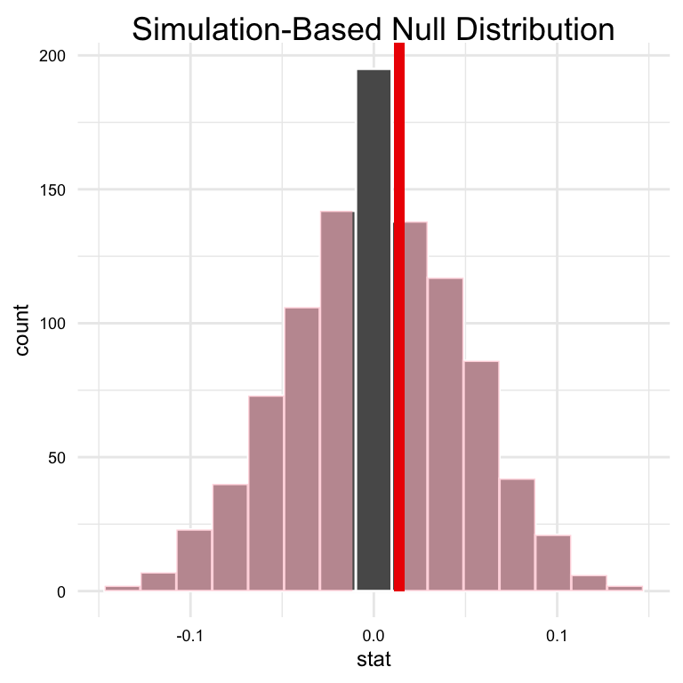
fillers_per_100_log variable by ageThis is a very large p-value and underscores what the scatterplot in Figure 10.22 suggests –there is no relationship between the two variables.
For completeness, we calculate a confidence interval to assess the uncertainty of the observed statistic, as seen in Example 10.51.
Example 10.51
# Resampling distribution
fillers_boot <-
fillers_spec |>
generate(reps = 1000, type = "bootstrap") |>
calculate(stat = "correlation")
# Calculate the confidence interval
fillers_ci <-
fillers_boot |>
get_ci(level = 0.95)
fillers_ci> # A tibble: 1 × 2
> lower_ci upper_ci
> <dbl> <dbl>
> 1 -0.0867 0.120
The confidence interval includes 0, which suggests that the observed difference is questionable. But in contrast to the confidence interval in Example 10.48, the interval is narrow suggesting more strongly that the observed difference is not due to chance.
Multivariate analysis
While bivariate analysis is useful for exploring the relationship between two variables, it is often the case that we want to consider relationships between more than two variables. In this case, we can use multivariate analysis. Linear regression is a common multivariate analysis technique.
In linear regression, we are interested in predicting the value of a numeric response variable based on the values of the explanatory variables. The contribution of the explanatory variables can be considered individually, as an interaction, or as a combination of both.
Let’s now pick up the fillers_type_df dataset and explore the hypothesis that the rate of filler use varies by the type of filler across the socio-demographic variables sex, education, and age. To do this we will use R formula syntax to specify the variables we want to include in the model.
- Simple effects:
response ~ explanatory_1 + explanatory_2: the response variable as a function of each explanatory variable. - Interaction effects:
response ~ explanatory_1:explanatory_2: the response variable as a function of the interaction between the two explanatory variables. - Simple and interaction effects:
response ~ explanatory_1 * explanatory_2: the response variable as a function of each explanatory variable and the interaction between the two explanatory variables.
Let’s test the hypothesis that men and women differ in the rates that they use the filler types (fillers_per_100_log ~ filler_type * sex). A plot will help us begin to understand the potential relationships. In Example 10.52, we use a boxplot to visualize the relationship between the fillers_per_100_log variable and the filler_type variable, with a sex overlay.
Example 10.52
# Boxplot `filler_type`
fillers_type_df |>
ggplot(aes(y = fillers_per_100_log, x = filler_type)) +
geom_boxplot(notch = TRUE) +
labs(
x = "Filler type",
y = "Fillers per 100 (log)"
)
# Boxplot `filler_type` and `sex`
fillers_type_df |>
ggplot(aes(y = fillers_per_100_log, x = filler_type, fill = sex)) +
geom_boxplot(notch = TRUE) +
labs(
x = "Filler type",
y = "Fillers per 100 (log)",
fill = "Sex"
)
filler_type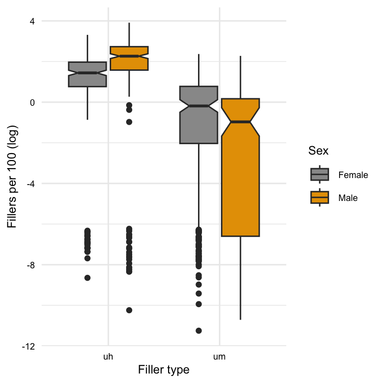
filler_type and sexfillers_per_100_log variable by filler_type and sexLet’s interpret the boxplot in Figure 10.25. Focusing on the ‘uh’ pane first, we see that the median is higher for men than women. The boxes do overlap, but the overlap is relatively small and the range is also relatively small. In the ‘um’ pane, in contrast, we see that the median rate of use is higher for women, but there is quite a bit of overlap and the range is particularly large for the males.
The big picture message, however, is that the trend for filler type goes in opposite directions for men and women. This type of relationship is called an interaction effect. In this case the interaction effect goes in opposite directions but even if the trend was in the same direction but the magnitude of the difference was different, it would still be an interaction effect.
Let’s test this effect using the infer workflow. Calculating the observed statistics for the simple and interaction effects is very similar to other designs, except instead of calculate() to derive our statistics we will use the fit() function, just as we did for logistic regression. Let’s go ahead calculate the observed statistics first, as seen in Example 10.53.
Example 10.53
# Specify the relationship
fillers_type_spec <-
fillers_type_df |>
specify(fillers_per_100_log ~ filler_type * sex)
# Observed statistics
fillers_type_obs <-
fillers_type_spec |>
fit()
fillers_type_obs> # A tibble: 4 × 2
> term estimate
> <chr> <dbl>
> 1 intercept 0.551
> 2 filler_typeum -2.16
> 3 sexMale 0.657
> 4 filler_typeum:sexMale -1.84The terms in the output from Example 10.53 provide information as to what the reference levels are. For example, filler_typeum tells us that the ‘uh’ level is the reference for filler_type and by the same logic, ‘Female’ is the reference for sex. These terms provide our simple effect statistics. Each can be understood as the difference between the reference level when the other variables are held constant. Our response variable is log transformed, so it is not directly interpretable beyond the fact that smaller units are lower rates of filler use and larger units are higher rates of filler use. So ‘um’ is used less than ‘uh’ and men use more fillers than women.
The interaction term fillertypeum:sexMale is the difference in the rate of fillers for this combination compared to the reference level combination (‘uh’ and ‘Female’). In this case, the observed rate is lower.
We now need to generate a null distribution to compare the observed statistics to. We will again use the permutation method, but since there is an interaction effect, we need to shuffle the filler_type and sex variables together. This ensures that any relationship between the two variables is removed. Let’s see how this works in Example 10.54.
Example 10.54
# Null distribution
fillers_type_null <-
fillers_type_spec |>
hypothesize(null = "independence") |>
generate(reps = 1000, type = "permute", variables = c("filler_type", "sex")) |>
fit()
# Visualize the null distribution w/ observed statistics
fillers_type_null |>
visualize() +
shade_p_value(obs_stat = fillers_type_obs, direction = "two-sided")
# Calculate the p-values
fillers_type_null |>
get_p_value(obs_stat = fillers_type_obs, direction = "two-sided")> # A tibble: 4 × 2
> term p_value
> <chr> <dbl>
> 1 filler_typeum 0
> 2 filler_typeum:sexMale 0
> 3 intercept 0
> 4 sexMale 0.066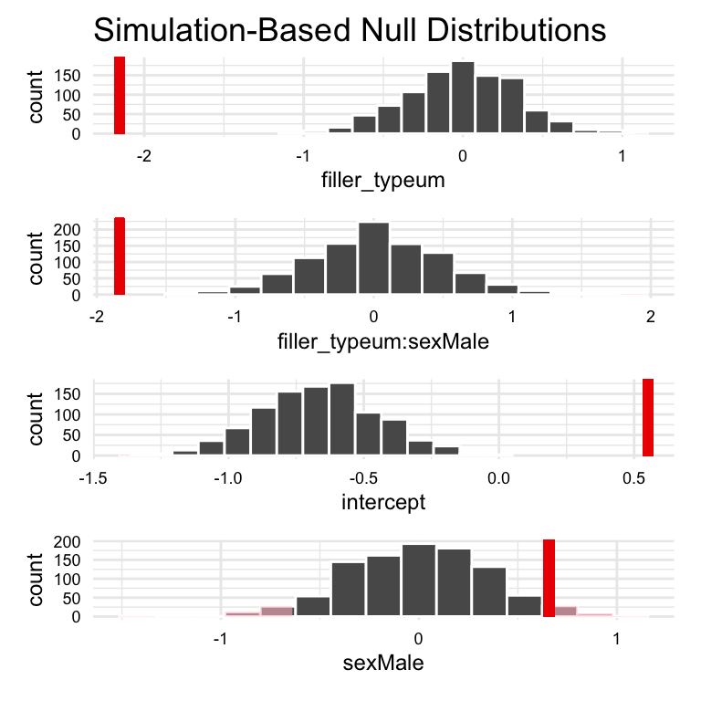
fillers_per_100_log variable by filler_type and sexFor the simple effects, we see that filler_type is significant but sex is not. Remember, when we only considered sex in isolation in the bivariate case, we found it to be significant. So why is it not signficant now? It is important to remember that in every statistical design, there are other factors that are not considered. When these are not in the model, our effects may appear to account for more of the variance than they actually do. In this case, the filler_type variable is accounting for some of the variance that sex was accounting for in the bivariate case, enough, it appears, to make sex not significant as a simple effect.
Our interaction effect is also significant meaning the observed difference we visualized is likely not due to chance. The upshot, men use ‘uh’ more and women use ‘um’ more.
As always, let’s calculate a confidence interval to assess the uncertainty of the observed statistic, as seen in Example 10.55.
Example 10.55
# Resampling distribution
fillers_type_boot <-
fillers_type_spec |>
generate(reps = 1000, type = "bootstrap") |>
fit()
# Calculate the confidence intervals
fillers_type_ci <-
fillers_type_boot |>
get_ci(level = 0.95, point_estimate = fillers_type_obs)
fillers_type_ci> # A tibble: 4 × 3
> term lower_ci upper_ci
> <chr> <dbl> <dbl>
> 1 filler_typeum -2.75 -1.54
> 2 filler_typeum:sexMale -2.68 -0.934
> 3 intercept 0.168 0.909
> 4 sexMale 0.0947 1.22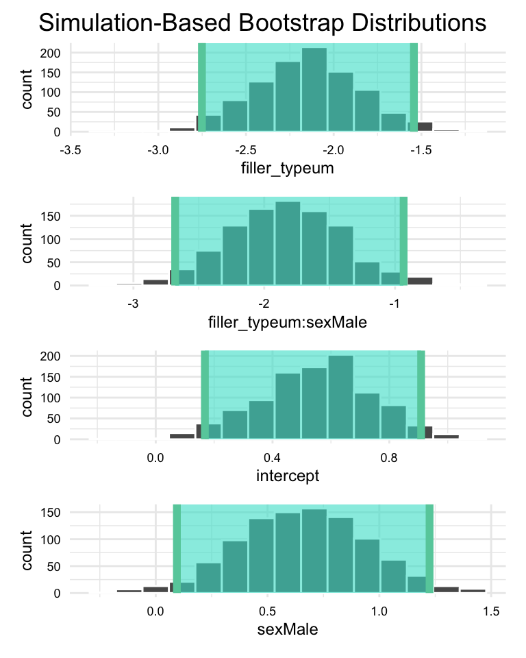
From the confidence intervals, we see that zero is not included in any of the intervals, which suggests that the observed differences are not due to chance. Interpreting the width and the proximity to zero, however, suggests that the observed differences for filler_type are stronger than for sex, which did not result in a significant simple effect. The interaction effect is also significant, but the confidence interval is quite wide and approximates zero. This should raise some questions about the robustness of the observed effect.
10.3 Summary
…
In sum, in this section we explored the process of statistical inference, specifically the process of hypothesis testing with categorical responses variables. We started with a univariate analysis, which, although not very interesting, allowed us to focus on the process and the logic of statistical inference. We then moved on to bivariate and multivariate analyses. We see that the process is very similar, but the complexity increases with the number of explanatory variables. In each case, we applied a simulation-based approach to statistical inference which may differ from the traditional approach you may have learned in your statistics courses. But as you can appreciate, the simulation-based approach is highly flexible, more intiutive, and more transparent. The infer package provides a consistent set of functions and pipeline to maintain a consistent workflow. If you have previous experience with R or find resources on statistical inference using R, you will likely find the traditional, theory-based, approach. I encourage you to explore the both approaches. They have their strengths and weaknesses, but I think you will find the simulation-based approach more intuitive and transparent as a beginner.
…
In this chapter we have discussed various approaches to conducting inferential data analysis. Each configuration, however, always includes a descriptive assessment, statistical interrogation, and an evaluation of the results. We considered univariate, bivariate, and multivariate analyses using both categorical and non-categorical dependent variables to explore the similarities and differences between these approaches.
Activities
Questions
“Hypothesis After Result is Known” (HARKing) involves selectively analyzing data, trying different variables or combinations until a significant p-value is obtained, or stopping data collection when a significant result is found (Kerr 1998).↩︎
“p-hacking” is the practice of running multiple tests until a statistically significant result is found. This practice violates the principles of significance testing (Head et al. 2015).↩︎